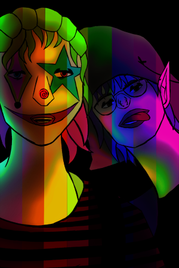

Digital art is the form of art I have the most experience in and probably have the most finished pieces from. During quarantine, I found myself trying to do a finished illustration everyday, even though they aren't the best, it still gave me the improvement and stamina which are two useful skills in art. All of these pieces are either from 2023 or 2024 and ranged from a wide range of subjects, composition, and color palettes. I love using bright colors in my art because it realy helps draw the viewers eye around the illustration.